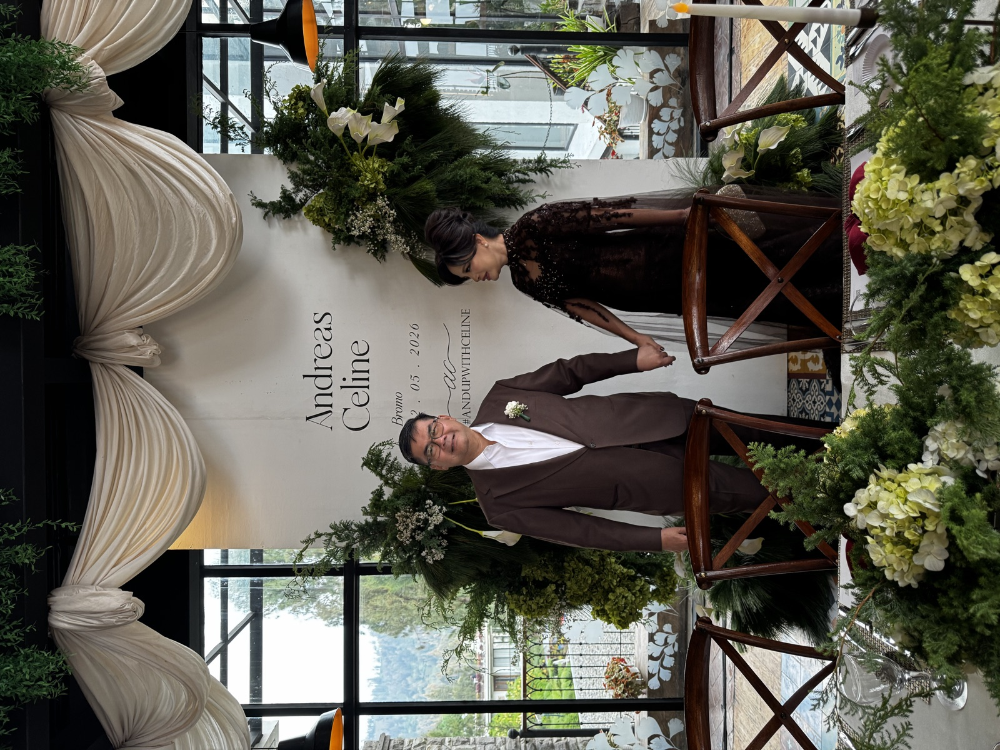
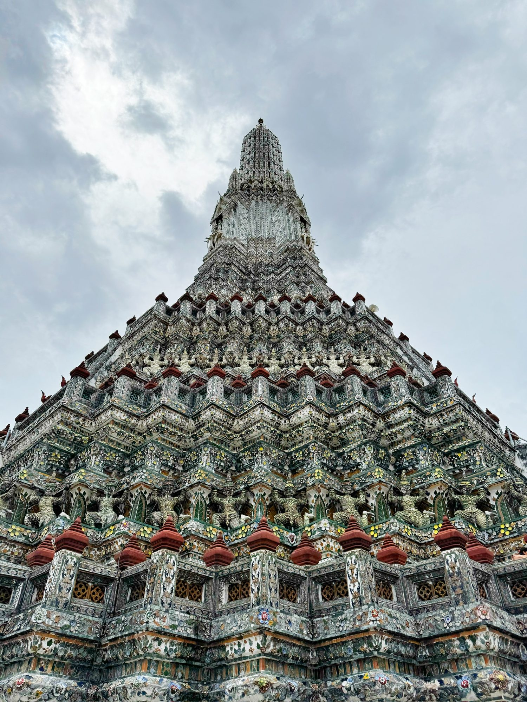
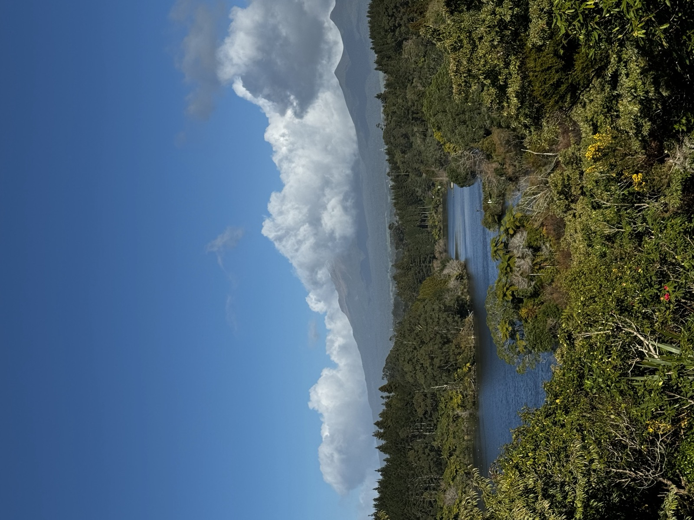
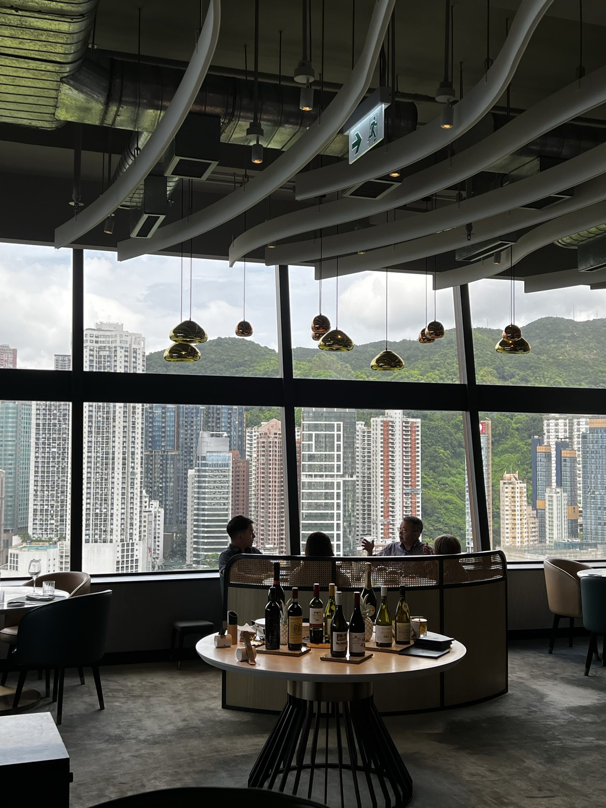
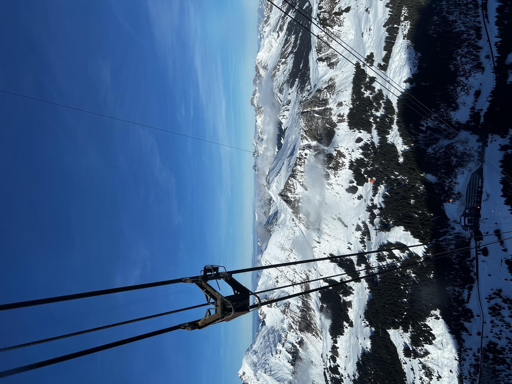
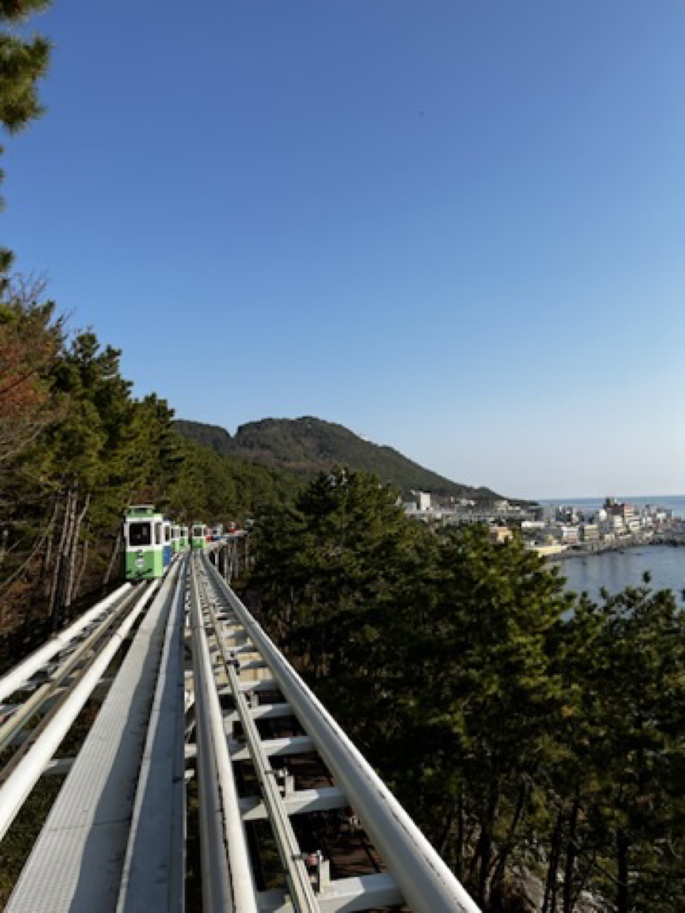
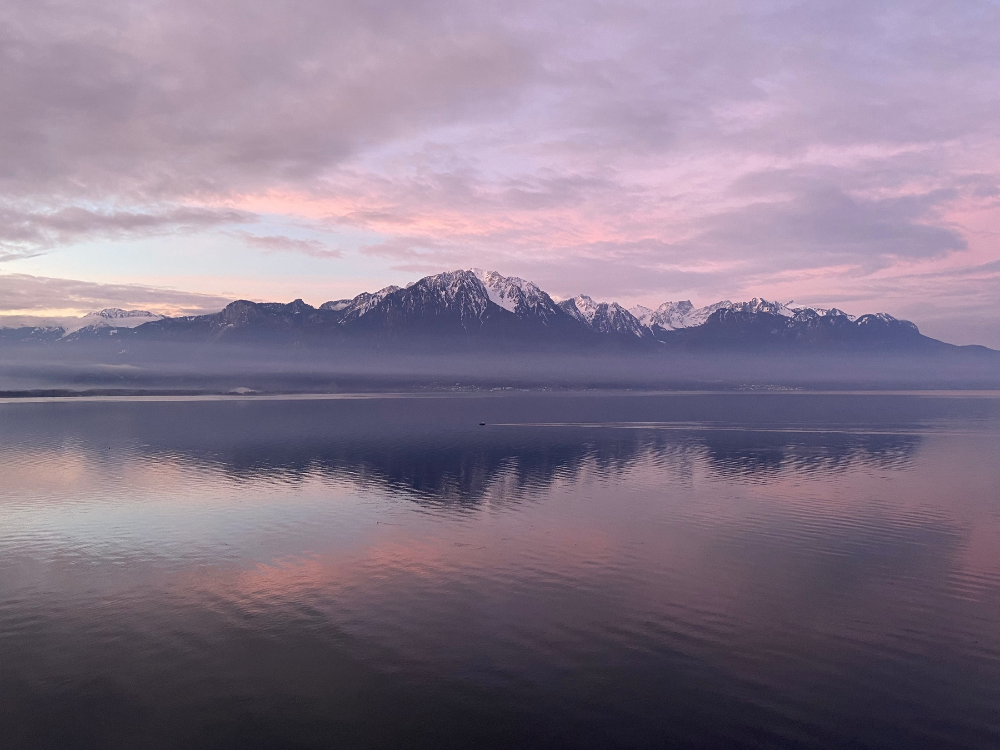

Travel · 2019–2026
Nine trips, kept as chapters.
Longer trips split into city chapters so they stay readable. Trip hub first, chapters next, and a food page whenever one meal deserves its own memory.
Best first read · Japan · 18–29 Jan 2025
Japan Winter Family Trip


Every trip, newest first
Some are full multi-city journals; others are a single weekend that mattered.

Malang & Bromo Wedding Weekend
Family-led rather than sightseeing-first: wedding warmth and mountain air.

Japan Winter Family Trip
Sapporo snow, Osaka energy, a Kyoto kimono day, Tokyo finishing strong.

Bangkok 2025
Two compact visits: Wat Arun, riverside light, and Khaan as the standout dinner.

New Zealand Winter Road Trip
North Island steam, cloud cover, lake stops, and a soft green close.

UK & Scotland Autumn Trip
London easing in, England road stops, then whisky rooms and old stone.

Hong Kong Food Stops & City Moments
Causeway Bay wandering, Bakehouse egg tart, Yat Lok roast goose.

Europe Winter 2021/22 Alpine Route
Zurich to Zermatt and St Moritz — plus the lesson to book New Year lodging early.

South Korea Winter Trip
Seoul for hanok streets and skyline; Busan for coast air and comfort food.

Europe Winter 2020
Milan through Switzerland, Germany, Amsterdam, Brussels, and a Paris finish.
Reading flow
Longer trips are split into lighter chapters. That’s deliberate.
Trip hub first, city chapters next, and a food page whenever one meal deserves its own memory. Nobody wants a sixteen-day journal as one scroll.
See it laid out
Nine trips and every meal, pinned on the Atlas.
The map is being drawn. Next up.